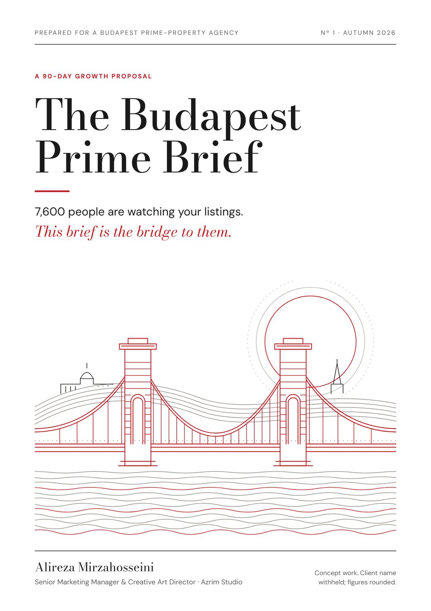
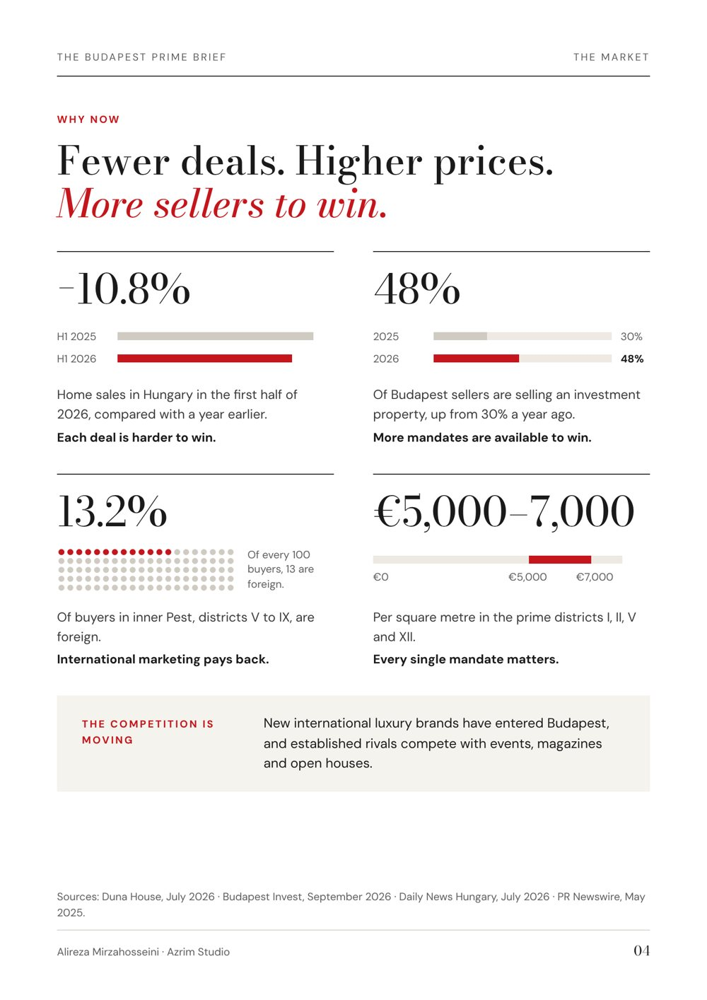
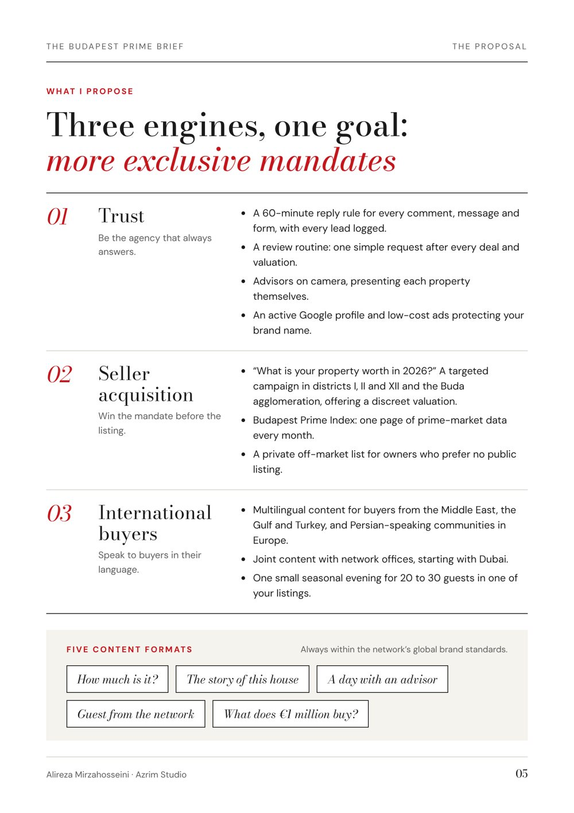
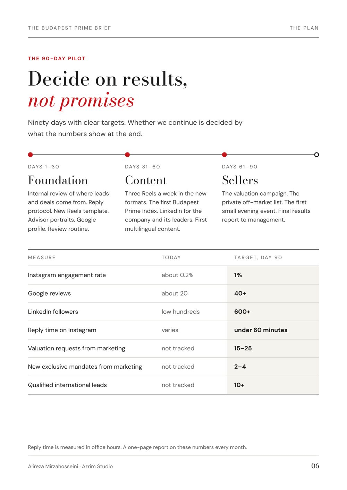
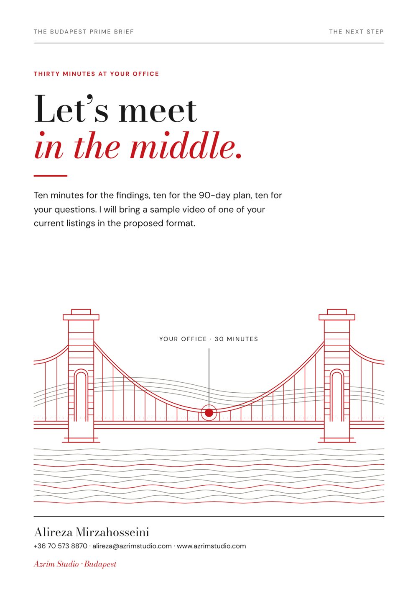
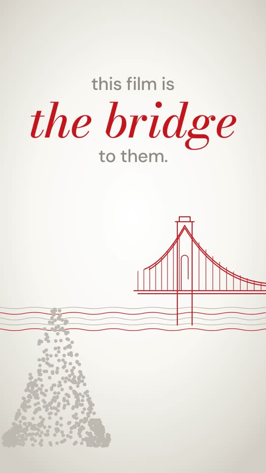
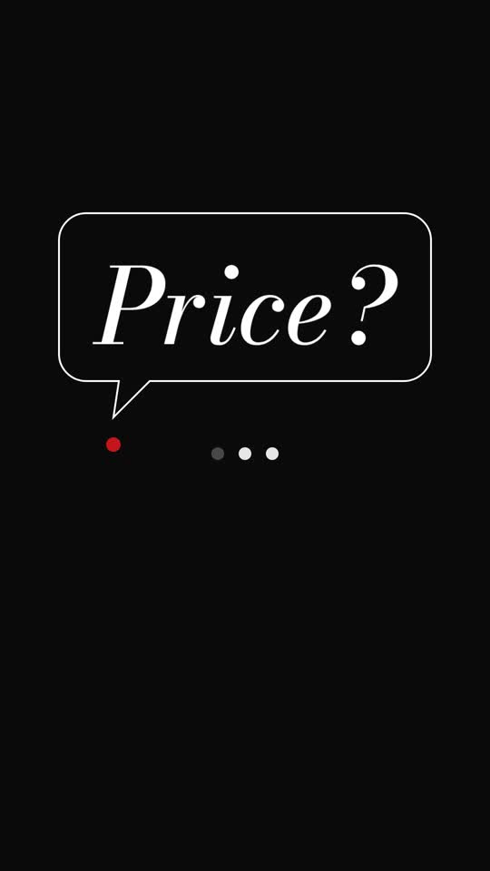
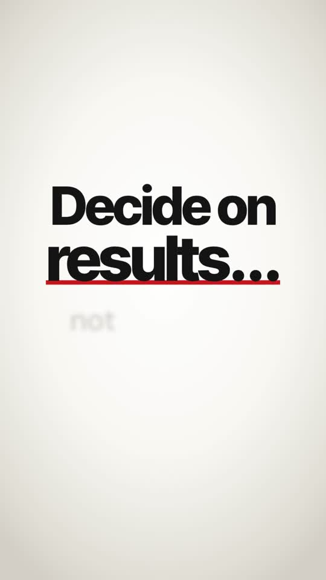
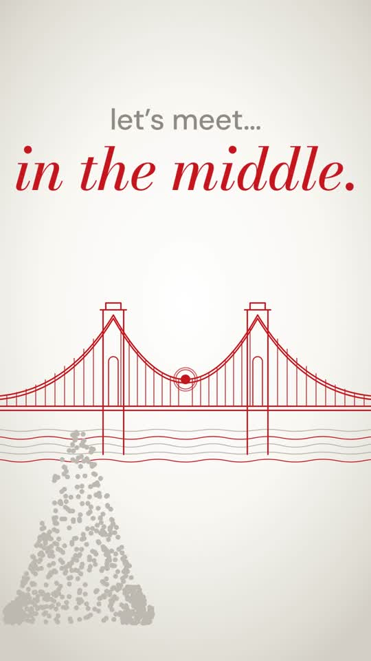

A research-led growth proposal for a prime-property agency in Budapest, delivered as an 8-page print brief and a 2-minute motion film. One idea runs through both: a single red line that draws the Chain Bridge, and the bridge between being seen and being contacted.

The agency had a strong public presence: a large Instagram audience, page-one search results and fast replies on its website. The brief asked one question: where does that attention stop turning into enquiries, and what would close the gap in ninety days?
Concept work, not a commissioned project. The client name is withheld and agency-specific figures are rounded. Market figures come from public sources cited in the brief.
A buyer's and a seller's view of every public touchpoint: Instagram, Google profile and reviews, search results, LinkedIn and response times, each recorded with a date and a source.
Transaction volumes, seller mix, foreign-buyer share and prime price bands, translated into one sentence the reader remembers: fewer deals, higher prices, more sellers to win.
Three engines (trust, seller acquisition, international buyers) with one goal: more exclusive mandates. A 90-day pilot with measurable targets, so the decision rests on results rather than promises.
A minimal editorial system in Bodoni Moda and DM Sans with a single red accent, built for digital print. The same line art drives a vertical kinetic-typography film, timed word by word to the narration.




2 minutes 21 seconds, vertical, built for a phone. Grey dots gather on one bank, a lone question goes unanswered on black, and at the end the two halves of the bridge meet and the same question finally gets a reply.




Public-data audit, competitor scan and market sources, every figure dated.
Editorial system, line illustration, print-ready PDFs with bleed in two languages.
Script, AI narration direction, kinetic typography and sound, timed to the voice.